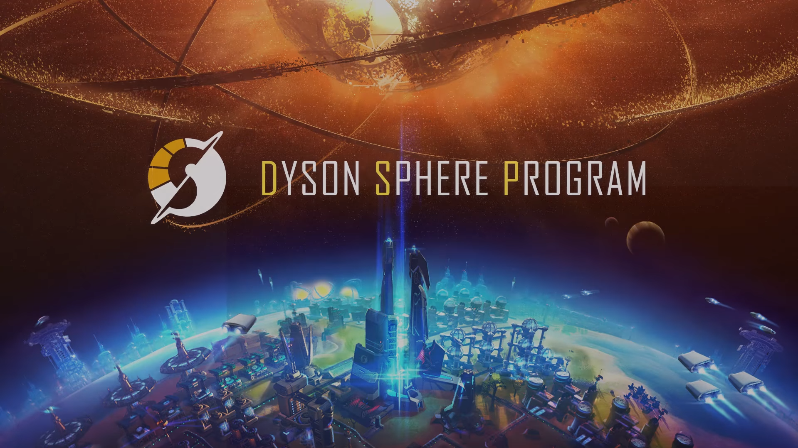
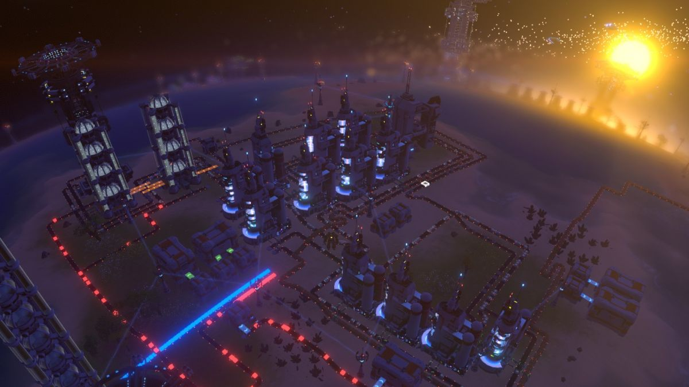

Dyson Sphere Program
Dyson Sphere Program is a factory simulation game developed by Youthcat Studio released for Microsoft Windows in January 2021 in early access. Dyson Sphere Program takes place in futurist science fiction where a society exists primarily in a virtual computer space, which demands a great deal of power and computational ability. To expand that, they have sent one of their members, the player-character, into the real universe as to construct a Dyson sphere from resources in a nearby star cluster that will supply that power.
The game generates a random star cluster that includes stars and their orbiting planets and moons with various resources based on biome type at the start of a new game, and designates one planet with the more fundamental resources for the player to start at. The player, controlling a mechanized suit, can gather resources such as iron, copper, and oil; build out fundamental components such as steel plates, gears, and electronic circuits; and then combine these into building structures that include assembly plants, transport systems, and power devices. The player can start to construct factories that can generate these items automatically, making sure that the factory has sufficient power and resources to continue running automatically. Products also are used to progress research into new technologies that expand the range of components and buildings that can be made as well as the capabilities of the mechanized suit, which also must be kept powered to continue to expand production. Eventually, these allow the player to leave the starting planet and begin developing factories to harvest more exotic resources from other planets which can then be transported across the star system, ultimately leading to where the components for the Dyson sphere are constructed and launched into their target orbit.
